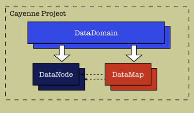

|
LOCAL DOCS
ONLINE RESOURCES |
| 3. Cayenne Project Structure
3.1 Cayenne Projects Cayenne project is a set of XML configuration files needed for a Java application to work with Cayenne. It is editable by CayenneModeler. A project has roughly the following structure: This structure is saved in the following set of files: - cayenne.xml file: This is a main project file
in each application. It should always be called - DataMap file : Used to instantiate DataMap objects that desribe a database schema and map it to the Java classes in the Java application. XML structure of the DataMap file is described in this DTD file. - DataSource file : In a standalone Java application, Java code has no access to DataSource objects that are normally provided by deployment containers. Cayenne framework still needs a DataSource to connect to the database. Therefore Cayenne has a set of wrapper classes located in org.objectstyle.cayenne.conn package, to create DataSource objects based on regular JDBC drivers. DataSource file provides needed information about database URL, JDBC driver, login, password and connection pooling parameters of a single DataSource. Note: such configuration file can be present in development so that CayenneModeler tool could obtain a database connection, even if an application wouldn't use it in deployment and instead would use a DataSource provided by the container. DTD for the DataSource file can be found here. |
|
CayenneModeler Guide - version 1.1
TABLE OF CONTENTS:
3. Cayenne Project Structure
|
| Copyright ©2001-2004 ObjectStyle Group |